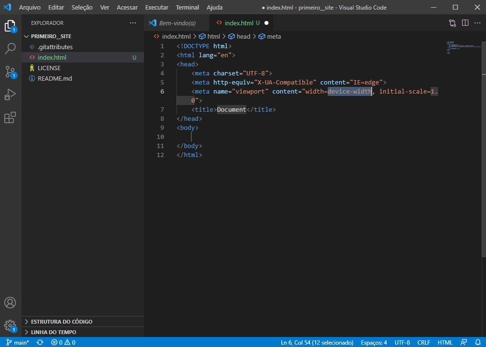
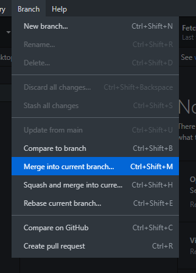

São ramificações de um projeto de software ou documento e tem como objeitvo o desenvolvimento paralelo de:
BRANCH MASTER OU MAIN: braço principal de um projeto em um repositório.
BRANCH SECUNDÁRIA: braço secundário de um projeto em um repositório.
Siga o passo a passo
Crie um novo repositório nno GitHub
Publique seu repositório
Abra seu repositório no VsCode
Digite "!" e de enter para aparecer automaticamente o corpo do programa
Abra o GitHub novamente
Agora vamos criar um branch
Abra seu repositório no VsCode e faça alterações
Volte no GitHub e faça um commit
Abra sua conta do GitHub no seu navegador e acesse seu branch
Crie um novo branch do branch main
Abra no VsCode e altere algo

Faça um commit
Agora selecione o branch main
Agora selecione "merge" para juntar seu brannch secundário com o main
Selecione seu primeiro branch secundário e realize o merge
Após isso tente realizar com o seu segundo branch secundário, se ele der erro como na imagem clique para ver o erro
Abra no VsCode
Ele irá mostrar para você onde está o erro, você tem vários opções, nesse caso vamos selecionar "accept both changes"
Volte no GitHub e veja se solucionou o problema, se sim realize o merge
Por fim faça o update pro main
O GitHub Pages oferece hospedagem gratuita de sites. Basta criar uma conta e um repositório público e terá uma URL.
Acesse sua conta no GitHub, selecione um repositório e entre na opção "settings"
Encontre o GitHub Pages
Selecione seu branch main e salve
Você receberá um link, é só clicar nele que abrirá seu repositório em hipertexto
Dessa maneira:
PARA MAIS PROJETOS DE EVELYN KAREN NEUMANN